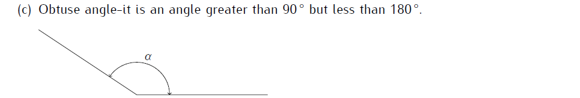

16 Chapter Sixteen: Angles and Plane Figures
Angles and Plane Figures
A plane is a flat surface, such as the walls of a classroom. Two planes always intersect in a straight line. A vertex is a point where two lines meet to form an angle.
Types of angles


Properties of angles
i) Angles on a straight line add up to \(180\,^{\circ}\)
ii) Angles at a point add up to \(360\,^{\circ}\)
iii) Sum of interior angles of a regular polygon is given by: \[Total \, interior \, angles =180^0(n-2)\] where \(n\) is the number of sides of the polygon
\[\therefore Each \,interior\, angle=\frac{180^0(n-2)}{n}\]
iv) Sum of exterior angles of a regular polygon is equal to \(360^0\)
\[\therefore Each\, exterior\, angle\,=\frac{360}{n}\]
v) Sum of an interior angle and an exterior angle is equal to \(180^0\)
16.1 Solved Examples
The sum of interior angles of two regular polygons of sides; n and \(n + 2\) are in the ratio \(5:7\) Calculate the sum of the interior angles of the polygon with n sides. \((4 mks)\)
\[ \begin{align} 1^{st}\,Polygon&=180^0(n-2)\\ 2^{nd}\, Polygon&=180^0(n+2-2)\\ \frac{\cancel{180^0}(n-2)}{\cancel{180^0}n}&=\frac{5}{7}\\7n-14&=5n \end{align} \] \[ \begin{align} \frac{\cancel{2}n}{\cancel{2}}&=\frac{\cancelto{7}{14}}{\cancel2}\\&=7\,sides\\ \therefore n\, sided \,polygon&=180^0(5)\\&=900^0 \end{align} \]
The exterior angle of a regular polygon is equal to two-thirds of the interior angle. Calculate the number of sides of the polygon and give its name. \((4mks)\)
\[ \begin{align} Sum\,Exterior\,angles&=360^0\\Sum \,interior\,angles&=180^0(n-2)\\ Exterior\,angle+Interior\,angle&=180^0\\If\, interior\, angle&=x^0,\\Exterior \,angle&=\frac{2}{3}x \end{align} \]
\[ \begin{align} x+\frac{2}{3}x&=180^0\\\frac{\cancel3}{\cancel5}\times \frac{\cancel5}{\cancel3}x&=\cancelto{36}{180^0}\times\frac{3}{\cancel5}\\&=36\times3\\\therefore interior\,angle\,&=108^0\\Exterior\, angle&=180^0-108^0\\\frac{360}{n}&=72\\n&=5;\, Pentagon \end{align} \]
The sum of the interior angles of an n-sided polygon is \(1260^0\). Find the value of n and hence deduce the name of the polygon. \((3mks)\)
\[ \begin{align} Sum\,interior\,angles&=180(n-2)\\180(n-2)&=1260^0\\n-2&=7\\n&=9;\,Nonagon \end{align} \]
The size of an interior angle of a regular polygon is \(x^2\) while its exterior angle is \(3x\). Find the number of sides of the polygon \((4mks)\)
One interior angle of a polygon is equal to \(60\,^{\circ}\) and each of the other interior angles is \(132\,^{\circ}\). Find the number of sides and name of the polygon. \((3mks)\)
The difference between the exterior and interior angle of a regular polygon is \(120\,^{\circ}\). Determine the number of sides of the polygon. \((3mks)\)
A regular polygon has internal angle of \(120\,^{\circ}\) and side of length 18cm.
a) Find the number of sides of the polygon. \((2mks)\)
b) Find the perimeter of the polygon. \((2mks)\)
The sum of the interior angles of a regular polygon is \(1800\,^{\circ}\). Calculate
a) The number of sides of the polygon \((2mks)\)
b) The sizes of the exterior and interior angles of the polygon. \((2mks)\)
The interior angle of a regular polygon is \(30\,^{\circ}\) more than four times the exterior angle of the same polygon. Determine the number of sides of the polygon. \((3mks)\)
The size of an exterior angle of a regular polygon is \(\frac{2}{3}\) times the size of its interior angle. Find the number of sides of this polygon. \((3mks)\)
The sum of the interior angles of an n-sided polygon is \(1440^0\). Find the value of n and hence deduce the name of the polygon. \((3mks)\)
The sum of the interior angles of an n-sided polygon is \(1080^0\). Find the value of n and hence give the name of the polygon. \((3mks)\)
A nine-sided polygon has three of its angles equal to and the other angles are \((2\theta - 30)\), \((\theta- 28)\), \(3(\theta - 4)\), \(\theta -45\), \(3\theta-20\), and \((126 - \theta)\). Calculate the value of \(\theta\). \((3mks)\)
On a graph paper,
a) Plot the points \(A(4, -1)\), \(B(5, -3)\), \(C(4, -4)\) and \(D(3, -3)\) and join the Points to form a polygon PQRS. State the name of the polygon formed. \((2mks)\)
b) Write down the equation of the line of symmetry of the polygon. \((1mk)\)
In the figure below \(MNO =54\,^{\circ}\) and \(PLM =50\,^{\circ}\), \(PN = NM\) and PO is parallel to LM. Find the value of \(\sphericalangle LPM\)